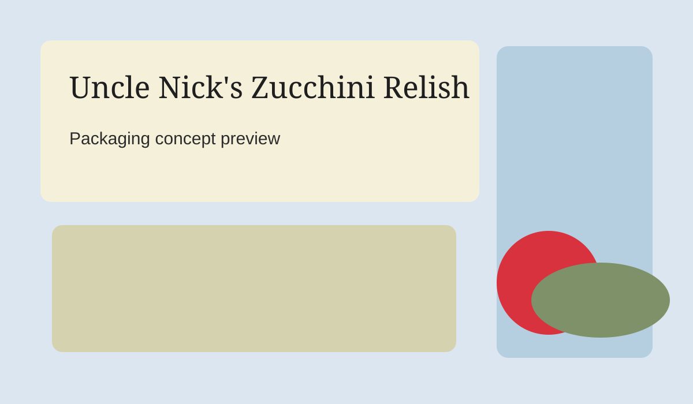

Graphic Design
Uncle Nick's Zucchini Relish
A packaging and identity concept combining rustic typography, earthy tones, and organic ingredient storytelling to make homemade preserves feel warm and trustworthy.

Graphic Design
A packaging and identity concept combining rustic typography, earthy tones, and organic ingredient storytelling to make homemade preserves feel warm and trustworthy.